Elsie Inglis was born on 16 August 1864 at Naini Tal, in the
Himalayan foothills of India. Her father, John Inglis, was in the
service of the East India Company, although he was opposed to the
imperialist policies of the 1870s. John retired and moved his
family to Tasmania for two years before moving to Edinburgh in
1878. From 1878 to 1882, Inglis attended the Edinburgh Institute
for the Education of Young Ladies. When she was eighteen, Inglis
attended a finishing school in Paris. Inglis knew she wanted to
pursue a career in medicine and fortunately in 1886 Sophie
Jex-Blake opened the Edinburgh School of Medicine for Women, where
Inglis began her medical training. However, a student rebellion in
1889 led Inglis with the support of her father and his influential
friends to establish a rival school, the Medical College for
Women. Inglis studied at the Glasgow Royal Infirmary for eighteen
months before qualifying as a licentiate at the Colleges of
Physicians and Surgeons in Edinburgh and Glasgow.
Inglis’s first position was medical officer at Elizabeth Garrett
Anderson’s New Hospital for Women in London. Inglis held a short
post in Dublin before returning to Edinburgh in 1894 where she
opened a general practice. In 1899, Inglis graduated MB CM from
Edinburgh and was appointed lecturer of gynaecology at the Medical
College for Women. Inglis, in partnership with Jessie Macgregor,
opened a small hospital for women and children in 1894.
In 1904, Inglis’s small hospital moved to the High Street and was
renamed The Hospice. In 1905 Inglis was appointed senior
consultant of the Bruntsfield Hospital, which merged with The
Hospice in 1911.
Inglis was nearly fifty in 1914 when war was declared, but her
zeal and patriotism led her to offer her services to the War
Office, only to be denied. Not deterred, Inglis sought to form
independent hospital units staffed by women. An appeal for funds
and support soon attracted more than just suffrage supporters.
Inglis gave an inspiring speech in October 1914 at Kingsway Hall
on ‘what women can do to help the war.’ Funds poured in for the
new organization, the Scottish Women’s Hospitals for Foreign
Service (SWH) and both the French and Serbs accepted the offer of
all female medical units. The first unit left for France in
November 1914 and the second went to Serbia in January 1915.
Inglis went to Serbia in 1915 as the chief medical officer.
In the autumn Serbia was invaded and Inglis’s hospital was taken
over by Germans. She was interned until February 1916 when she was
sent home. Upon her return to Britain, Inglis advocated for aid in
Serbia. On 3 April 1916, Inglis became the first woman to be
decorated with the order of the white eagle. Attempts over the
next couple of years to found hospitals and aid Serbia were tried
and failed. Inglis remained with her unit in Romania until
September 1917 when it re-joined the Serbian division.
Inglis knew she had cancer, and by the end of September was unable
to work as a surgeon, although she continued to direct the unit.
Although the political situation was deteriorating rapidly, Inglis
refused to leave until the Serbs were transferred out of Russia.
When the unit finally left, Inglis sent a telegraph home saying,
‘Everything satisfactory and all well except me.’ Inglis and her
unit landed in Newcastle and the following day, 26 November 1917,
in the presence of her sisters, Inglis died. Before her body was
interned in Dean Cemetery, Inglis’s body lay in state in St Giles’
Cathedral. The SWH continued its work for the duration of the war,
sending out more units and raising money for the work. Remaining
funds were used to establish the Elsie Inglis Memorial Maternity
Hospital in Edinburgh in July 1925.
Read more about this Amazing Lady on
Wikipedia page.
